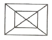
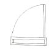
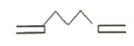
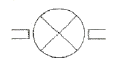

플라스틱창호기능사 (2007-07-15 기출문제)
1과목: 건축일반
1. 목재구조 반자틀의 구성요소가 아닌 것은?
- 반자돌림대
- 반자틀받이
- 걸레받이
- 딜대받이
(정답률: 85%)

2. 다음 중 연약지반에서 부동침하를 방지하는 대책과 가장 관계가 먼 것은?
- 건물 상부 구조를 경량화한다.
- 상부 구조의 길이를 길게 한다.
- 이웃 건물과의 거리를 멀게 한다.
- 지하실을 강성제로 설치한다.
(정답률: 80%)
3. 다음 중 초고층 건물의 구조로 가장 적합한 것은?
- 현수구조
- 절판구조
- 입체트러스구조
- 튜브구조
(정답률: 67%)
4. 다음 중 건축 구조법을 선정할 때 필요한 선정 조건과 가장 관계가 먼 것은?
- 입지 조건
- 요구 성능
- 건물의 색채
- 건축의 규모
(정답률: 84%)
5. 다음 중 건축 제도 용구가 아닌 것은?
- 홀더
- 원형 템플릿
- 데오톨라이트
- 컴퍼스
(정답률: 81%)
6. 건축구조의 구조 형식에 따른 분류 중 가구식 구조로만 짝지어진 것은?
- 벽돌구조 - 돌구조
- 철근콘크리트구조 - 목구조
- 목구조 - 철골구조
- 블록구조 - 돌구조
(정답률: 75%)
7. 목재의 이음과 맞춤을 할 때에 주의해야 할 사항이 아닌 것은?
- 이음과 맞춤의 위치는 응력이 큰 곳으로 하여야 한다.
- 공작이 간단하고 튼튼한 접합을 선택하여야 한다.
- 맞춤면은 정확히 가공하여 서로 밀착되어 빈 틈이 없게 한다.
- 이음ㆍ맞춤의 단면은 응력의 방향에 직각으로 한다.
(정답률: 76%)
8. 다음 중 조립식 건축에 관한 설명으로 옳지 않은 것은?
- 공장생산이 가능하여 대량생산을 할 수 있다.
- 기계화 시공으로 단기 완성이 가능하다.
- 기후의 영향을 덜 받는다.
- 각 부품과의 접합부가 일체가 되므로 접합부 강성이 높다.
(정답률: 72%)
9. 건물 전체의 무게가 비교적 가볍고 강도가 커 고층이나 스팬이 큰 대규모 건축물에 적합한 건축구조는?
- 철골구조
- 목구조
- 석구조
- 철근콘크리트구조
(정답률: 73%)
10. 다음 중 철골 구조에서 플레이트 보에 사용하는 부재가 아닌 것은?
- 커버 플레이트
- 웨브 플레이트
- 스티프너
- 베이스 플레이트
(정답률: 47%)
11. 다음의 벽돌쌓기에 대한 설명 중 옳지 않은 것은?
- 벽돌별 등에 장식적으로 구멍을 내어 쌓는 것을 영롱쌓기라 한다.
- 벽돌쌓기법 중 영국식 쌓기법은 가장 튼튼한 쌓기법 이다.
- 하루 쌓기의 높이는 1.8m를 표준으로 한다.
- 줄눈의 나비는 10mm를 표준으로 한다.
(정답률: 70%)
12. 블록구조의 종류 중 조적식 블록구조에 대한 설명으로 옳지 않은 것은?
- 공사비가 비교적 싸다.
- 횡력과 진동에 강하다.
- 공기가 짧다.
- 방화성이 있다.
(정답률: 65%)
13. 건축물을 표현하는 투시도법 중 그림과 같은 투시도법은 어느 것인가?

- 평행 투시도법
- 유각 투시도법
- 사각 투시도법
- 3소점 투시도법
(정답률: 70%)
14. 철근콘크리트구조에 관한 설명 중 틀린 것은?
- 각 구조부를 일체로 구성한 구조이다.
- 역학적 작용이 크게 다른 서로의 단점을 보완하도록 결합한 구조이다.
- 내구ㆍ내화성은 뛰어나나 자중이 무겁고 시공과정이 복잡하다.
- 철근과 콘크리트는 선팽창계수가 달라 그 점을 보완한 것이다.
(정답률: 65%)
15. 다음 그림은 무엇을 표시하는 것인가?

- 외여닫이문
- 미닫이문
- 미닫이창
- 미서기문
(정답률: 82%)
16. 다음 중 허용 지내력도가 가장 작은 지반은?
- 점토
- 모래+점토
- 자갈 + 모래
- 자갈
(정답률: 82%)
17. 벽돌벽체의 작도순서로 가장 올바른 것은?
- 벽체중심선 - 각 벽두께 - 창문틀나비 - 각 세부완성
- 벽체중심선 - 창문틀나비 - 각 벽두께 - 각 세부완성
- 창문틀나비 - 벽체중심선 - 각 벽두께 - 각 세부완성
- 창문틀나비 - 각 벽두께 - 벽체중심선 - 각 세부완성
(정답률: 66%)
18. 다음 중 기초 도면 작성시 가장 먼저 해야 할 사항은?
- 테두리선을 긋는다.
- 지반선과 벽체 중심선을 긋는다.
- 표제란을 기입한다.
- 기초 크기에 알맞게 축척을 정한다.
(정답률: 72%)
19. 선의 종류에 따른 용도로 옳지 않은 것은?
- 굵은 실선 - 물체의 보이는 부분을 나타내는데 사용
- 파선 - 물체의 보이지 않는 부분의 모양을 표시하는데 사용
- 1점 쇄선 - 물체의 절단한 위치를 표시하거나, 경계선으로 사용
- 2점 쇄선 - 물체의 중심축, 대칭축을 표시하는데 사용
(정답률: 59%)
20. 철근의 정착 길이에 관한 설명 중 틀린 것은?
- 콘크리트의 강도가 클수록 짧게 한다.
- 철근의 지름이 클수록 길게 한다.
- 철근의 항복강도가 클수록 짧게 한다.
- 철근의 종류에 따라 정착길이는 달라진다.
(정답률: 59%)
2과목: 플라스틱개론
21. 위험성이나 문제가 있다고 알려진 항목을 정리하여 표(check list)로 만들어 평가하는 기법은?
- 통계법
- 점검법
- 분석법
- 평가법
(정답률: 60%)
22. 불안전 행동의 내적 요인 중 생리적 요인은?
- 망각
- 억측판단
- 정서 불안정
- 피로
(정답률: 68%)
23. 안전하게 작업을 하기 위하여 갖가지 수칙이 필요하다. 이와 같은 강제 규정을 만든 이유 중 가장 근본적인 사항은?
- 생산제품의 손실을 증대하기 위해
- 생산성이 증대되도록 하기 위해
- 산업손실을 감소하기 위해
- 인명과 설비의 피해 방지를 위해
(정답률: 84%)
24. 건설재해 예방 대책 중 추락방지 대책으로 적합하지 않은 것은?
- 작업 발판 등의 설치
- 승강 설비의 설치
- 악천후시의 작업 금지
- 안전대 부착설비 설치금지
(정답률: 76%)
25. 사고예방의 기본 4원칙 중 잘못된 것은?
- 손실 필연의 원칙
- 원인 계기의 원칙
- 예방 가능의 원칙
- 대책 선정의 원칙
(정답률: 73%)
26. 사고의 연쇄성 이론 [도미노(domino(현상]을 이용하여 재해의 발생원리를 설명한 사람은?
- 버크호프
- 게리
- 하인리히
- 버드
(정답률: 90%)
27. 목재, 섬유류 등 A급 화재나 소규모 유류 화재에 가장 적당한 소화기는?
- 분말 소화기
- 포말 소화기
- 탄산가스 소화기
- 산ㆍ알칼리 소화기
(정답률: 63%)
28. 분진을 방지하기 위한 방법이 아닌 것은?
- 습식 작업을 건식 작업으로 전환한다.
- 작업 재료나 조작 방법을 변경한다.
- 환기 장치와 집진 장치를 설치한다.
- 살수차량을 운행한다.
(정답률: 75%)
29. 재해 원인 분류에서 관리적인 원인이 아닌 것은?
- 기술적 원인
- 불안전한 행동
- 교육적 원인
- 작업 관리상 원인
(정답률: 72%)
30. 통계적으로 산업재해가 발생하였을 때 사람의 신체부위 중에서 가장 많이 상해를 입는 부위는?
- 척추, 옆구리
- 다리, 발
- 손, 팔
- 가슴, 배
(정답률: 85%)
31. 산업재해를 조사하는 목적을 가장 바르게 설명한 것은?
- 안전교육의 결함 파악
- 동종재해 및 유사재해의 발생방지
- 관련자 처벌 및 책임 추궁
- 사후대책 수립
(정답률: 68%)
32. 사고발생의 요인과 관계 없는 것은?
- 유전과 환경의 영향
- 심신의 결함
- 불안전한 행동 및 상태
- 정신집중과 작업환경개선
(정답률: 39%)
33. 안전관리의 조직형태 중에서 경영자의 지휘와 명령이 위에서 아래로 하나의 계통이 되어 잘 전달되며, 소규모 기업에 적합한 방식은?
- 참모식 조직
- 기능식 조직
- 단계식 조직
- 직계식 조직
(정답률: 75%)
34. 화재의 종류가 바르게 연결된 것은?
- A급 화재 - 일반화재
- B급 화재 - 전기화재
- C급 화재 - 금속화재
- D급 화재 - 유류화재
(정답률: 74%)
35. 보호구로서 갖추어야 할 구비요건과 거리가 가장 먼 것은?
- 착용이 간편할 것
- 위험요소에 대한 방호가 안전할 것
- 작업에 방해가 되지 않을 것
- 가격이 저렴할 것
(정답률: 90%)
36. 압축 성형법에 대한 설명으로 옳지 않은 것은?
- 열경화성 수지에 응용되는 가장 일반적인 성형법이다.
- 분말 또는 정제형의 성형 재료를 가열된 철재에 넣어 유압, 수압을 가한다.
- 가열온도를 200~220℃로 한다.
- 수압은 200~500kg/cm2로 한다.
(정답률: 62%)
37. 다음 창호의 5대 가능 중 외부 풍압 등에 창호 및 유리가 견디는 정도를 나타내는 것은?
- 기밀성
- 수밀성
- 내풍압성
- 단열성
(정답률: 82%)
38. 열가소성 수지의 일반적인 색상은 어떠한가?
- 무색투명
- 백색
- 초록
- 검정
(정답률: 76%)
39. 다음 금속 중에서 비중이 가장 크고 연하며, 주조 가공성 및 단조성이 풍부한 재료는?
- 주석
- 아연
- 니켈
- 납
(정답률: 72%)
40. 플라스틱의 원료 중 에틸렌과 프로필렌은 어느 계열에서 얻는가?
- 석탄계
- 석유계
- 목재계
- 석재계
(정답률: 73%)
3과목: 작업안전
41. 플라스틱 표면을 유리와 같이 만들 수 있는 표면 처리 방법은?
- 화학도금
- 화학적 도금
- 증착법
- 은경법
(정답률: 73%)
42. 플라스틱창호제작에서 호차(로울러)를 시공하려고 한다. 반드시 필요한 기기는?
- 개공기
- 용접기
- 랩핑기
- 절단기
(정답률: 73%)
43. 여닫이문의 손잡이 높이는 바닥에서 어느 정도 높이에 있는 것을 표준으로 하는가?
- 60cm
- 80cm
- 120cm
- 150cm
(정답률: 74%)
44. 플라스틱 성형품의 일반적인 비중은 어느 정도인가?
- 0.001~0.0⑤
- 0.01~1.6
- 3.5~5.0
- 7.0~9.5
(정답률: 75%)
45. 성형품의 강도, 외관 등의 물성을 개량하고, 중량하여 원가를 줄일 목적으로 첨가하는 플라스틱의 부재료는?
- 착색제
- 충전제
- 발포제
- 대전방지제
(정답률: 69%)
46. 합성수지 제품 중 강도가 가장 크며 공장, 체육관 등의 천창용 재료로 가장 적당한 것은?
- PVC
- FRP
- 필름
- 레저
(정답률: 76%)
47. 합성수지 창호에서 틀재의 길이가 1m이하일 때 고정철물을 양측 몇 개소에 부착을 하는가?
- 1개소
- 2개소
- 3개소
- 4개소
(정답률: 77%)
48. 다음 그림 평면기호의 명칭으로 옳은 것은?

- 주름문
- 망사문
- 접이문
- 방화문
(정답률: 80%)
49. 플라스틱이 기구류, 판류, 시트, 파이프 등의 성형품으로 쓰일 수 있는 것은 플라스틱의 어떤 성질 때문인가?
- 내마멸성
- 전성
- 연성
- 가소성
(정답률: 63%)
50. 다음 중 플라스틱창의 제조공법으로 이용되는 것은?
- 사출
- 압출
- 핸드레이
- 프레스
(정답률: 63%)
51. 석재를 보로 사용하지 않는 가장 큰 이유는?
- 비중이 크기 때문에
- 휨 강도가 약하므로
- 내구성이 작기 때문에
- 석리가 있기 때문에
(정답률: 69%)
52. 다음 중 열경화성 수지는?
- 염화비닐수지
- 프탈수지
- 폴리에틸렌수지
- 메타아크릴수지
(정답률: 31%)
53. 내알칼리성, 전기절연성, 내후성이 우수하고 방수성이 있어 방수제로 쓰이는 것은?
- 실리콘수지
- 요소수지
- 페놀수지
- 멜라민수지
(정답률: 80%)
54. 다음 중 플라스틱창의 자체하중 및 풍압 등에 의한 변형을 방지하기 위하여 사용되는 재료는?
- 보강재
- 크리센트
- 모헤어(방풍모)
- 호차
(정답률: 78%)
55. 다음 그림과 같이 평면도상에 표기되는 문은?

- 회전문
- 미서기문
- 빈지문
- 여닫이문
(정답률: 87%)
56. 다음 중 플라스틱창의 주요 배합원료가 아닌 것은?
- 복합안정제
- 충격보강제
- 유리섬유
- 충전제(Filler)
(정답률: 70%)
57. 표면을 아주 평활하게 마감한 것으로 반사나 굴정이 적어 진열용 창에 많이 이용되는 유리는?
- 무늬유리
- 자외선투과유리
- 후판유리
- 서리유리
(정답률: 65%)
58. 다음은 국내 플라스틱창호의 일반적인 약칭이다. 바르게 짝지어지지 않은 것은?
- 창틀 - B/F(Blank Frame)
- 창짝 - S/F(Sliding Frame)
- 유리고정테 - G/B(Glazing Bead)
- 방충망 - M/C(Middle Closing)
(정답률: 78%)
59. 다음 중 점토제품이 아닌 것은?
- 자기질타일
- 테라코타
- 도관
- 테라조
(정답률: 53%)
60. 합성수지의 일반적인 성질을 기술한 것 중 틀린 것은?
- 내열, 내화성이 커서 550℃ 이상에서도 견딘다.
- 경량이며 구조 재료로는 불리하다.
- 가공하기 쉽고 착색이 비교적 자유롭다.
- 투과성이 큰 것은 유리 대신 채광판으로 사용한다.
(정답률: 67%)